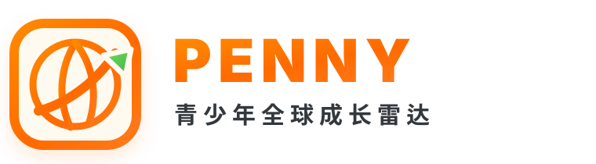
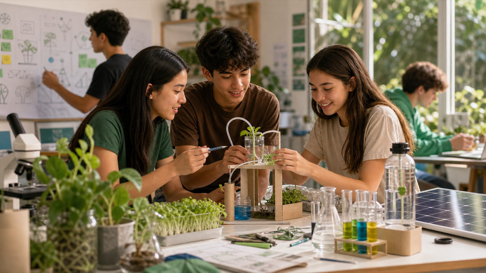
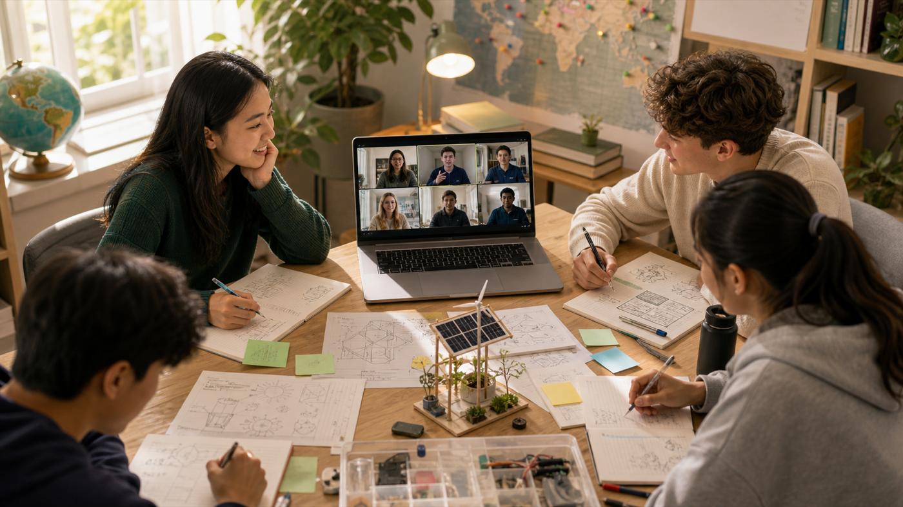
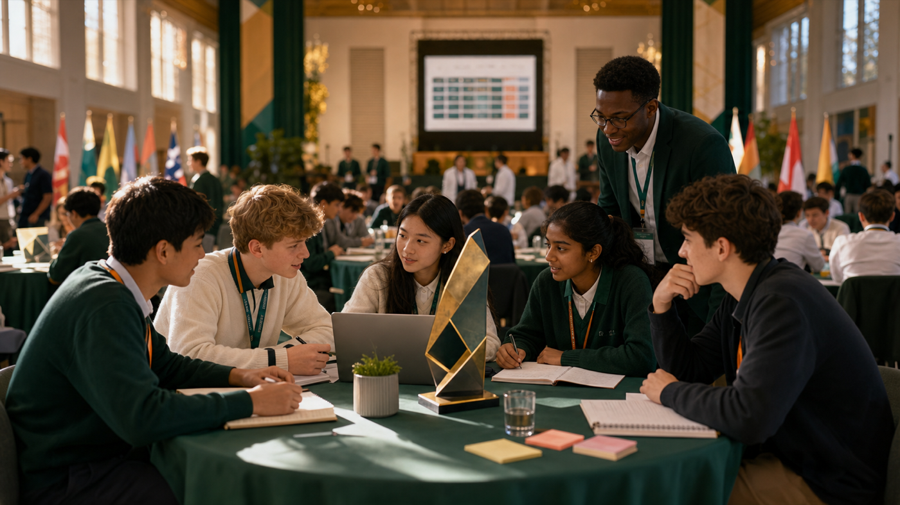
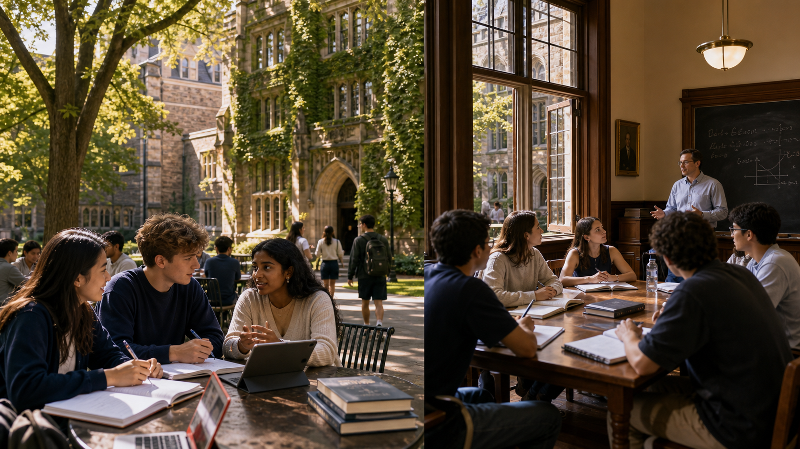

项目信息来自海外大学、竞赛主办方、基金会、科研机构和官方项目页，不搬运中介包装项目。

每周全球成长机会简报
PENNY 青少年全球成长雷达
面向中国初高中家庭的全球竞赛、夏校、科研、奖学金与文化实践机会订阅，陪你发现孩子成长路上的全球机会！
每周邮件发送
官方来源核验
家长友好解读
¥699/年
What We Check
我们先核验资格，再判断含金量。
每个项目都写清楚是否接受国际学生、是否适合中国学生直接申请、是否需要学校提名。
含金量判断会综合官方背景、筛选机制、成果形式、过往认可度、费用合理性和申请难度。
本周可关注
本周机会雷达
本期收录适合中国初高中家庭近期关注的全球竞赛与成长机会，重点标注项目背景、适合学生、准备动作与官方入口。
当前开放
竞赛 · 科学传播
Breakthrough Junior Challenge（青少年科学视频挑战赛）
面向全球青少年的科学视频挑战赛。官网时间线显示 2026 年 5 月 11 日开放、9 月 15 日截止，适合本周立即确定选题、脚本和拍摄计划。
发起机构Breakthrough Junior Challenge / Breakthrough Prize 相关项目
形式线上提交科学解释视频
适合13-18 岁；初三-高二最适合打磨
中国学生面向全球学生，提交前需逐条核对当年参赛规则
本周动作定一个科学概念，写 90 秒解释脚本
难度高：拼理解、表达、视频叙事
价值
官方项目页
它不是刷题型竞赛，而是把科学理解变成公众能看懂的视频作品。优秀作品可以作为理工科兴趣、英文表达和项目执行力的作品证据；官网列出的奖励包括高等教育奖学金、教师奖励和学校科学实验室。

注册开放
环保 · 创新挑战
The Earth Prize 2027（青少年环保创新竞赛）
面向全球青少年的环境可持续发展竞赛。官网首页显示 2027 年注册已开放，适合已有环保、生态、气候、社区行动兴趣的学生团队。
适合约 13-19 岁学生；团队型更合适
形式线上注册，围绕环境问题提交方案
本周动作先选一个本地真实问题：校园废弃物、用水、碳排、食物浪费
申请价值能沉淀环保议题、团队方案和项目执行证据
这类项目最怕空泛口号。建议优先选择孩子能持续观察和验证的数据问题，后续才有真实作品和复盘可写。对申请的帮助主要来自项目过程、方案质量和持续行动，而不是报名本身。
官方项目页
延期提交窗口
写作 · 学术论文
John Locke Essay Competition（约翰·洛克论文竞赛）
面向中学生的英文论文竞赛，题目覆盖哲学、政治、经济、历史、心理、神学、法律等方向。2026 年常规报名已过，本周适合已注册或购买延期的家庭检查提交窗口。
适合英文写作强、愿意做论证型阅读的初高中生
本周动作已注册学生核对提交要求、引用格式和最终稿
成果一篇可沉淀的英文论证文章
提醒普通报名关闭后，只适合已进入提交流程的家庭
这类论文竞赛对申请的帮助来自阅读、论证和英文写作能力本身。若文章能体现清晰问题意识、引用规范和独立观点，可作为人文社科方向的作品素材；家长应重点看孩子是否能讲清观点，而不是只看参赛名号。
官方项目页
申请开放至 7 月 2 日
科研 · 理工科协作
纽约科学院青少年学院（NYAS The Junior Academy）
纽约科学院面向 13-17 岁学生的线上项目制科学协作社区。官网显示 2026 秋季学生申请窗口为 4 月 1 日至 7 月 2 日。
发起机构纽约科学院（New York Academy of Sciences）
形式线上国际团队 + 科学挑战项目
适合13-17 岁，有英文协作和科学兴趣
中国学生国际项目，可直接关注官方申请
本周动作整理英文项目经历、科学兴趣和协作证据
难度中-高：重长期参与和团队沟通
价值
官方项目页
它比“买一个科研项目”更值得看，因为核心是国际团队协作和真实挑战。如果孩子能持续参与并留下项目成果、团队贡献和反思记录，会比单纯结业证书更能说明科研兴趣和协作能力。

多场全球轮次报名中
综合学术 · 写作辩论
世界学者杯（World Scholar's Cup）
面向中学生的国际综合学术活动，包含团队写作、辩论、知识挑战等形式。2026 年官网日历列出多个全球站，可按城市和时间选择。
适合英文表达、辩论、跨学科兴趣较强的学生
形式线下团队赛，需根据地区轮次报名
本周动作核对 2026 全球站城市、名额、费用和签证安排
申请价值可作为英文表达、团队协作和跨学科兴趣证据
适合想用英文参加国际学术活动、但还没准备好高强度科研或论文竞赛的学生。家长要重点看孩子是否喜欢公开表达和团队配合。
官方日历页重点深拆
本周重点深拆：Breakthrough Junior Challenge（青少年科学视频挑战赛）
为什么值得看
把“会做题”变成“讲得清楚”，这是理工科学生很稀缺的能力证据。
Breakthrough Junior Challenge 要求学生用视频解释一个物理、生命科学或数学概念。它考的不是背公式，而是理解、结构化表达、视觉叙事和公众沟通。
项目背景
Breakthrough Junior Challenge 是全球青少年科学视频挑战赛，项目与 Breakthrough Prize 生态相关。官网把赛事定位为让学生用创造性的方式解释复杂科学概念，并列明获奖者可获得高等教育奖学金、教师奖励和学校科学实验室等奖励。
本年度窗口
官网时间线显示 2026 年赛事 5 月 11 日开放，9 月 15 日截止。对中国家庭来说，现在不是“先收藏”，而是可以开始定题、写稿、试拍。
适合谁
适合 13-18 岁、已经对某个科学概念有兴趣的学生。最理想的孩子不是“题都会做”，而是愿意把一个概念拆到别人听懂，并反复修改表达。
认可与成果
项目官网设置了明确奖项体系，并把优秀科学解释视频作为核心成果。PENNY 判断该项目更实际的价值是孩子能产出一支高质量英文科学传播作品，证明理工科兴趣、表达能力和项目执行力。
家长要看什么
不要先问能不能得奖，先看孩子能否把题目缩小：一个概念、一个误解、一个生活化场景、一条清晰解释线。选题越大，越容易变成科普口号。
本周行动清单
列 3 个候选概念；各写 100 字“为什么它容易被误解”；选 1 个概念做 60-90 秒脚本；用手机试拍一版，检查孩子是否真的讲清楚。
Grade Action
按年级行动建议
本周任务：不急着投名校项目，先让孩子从“科学解释、英文写作、环境观察、公共议题”里选一个方向，做一份 1 页兴趣记录。低年级的重点是发现稳定兴趣。
本周任务：如果暑期有营地或交流经历，马上整理照片、课程笔记、老师反馈和 500 字复盘。未来申请夏校或竞赛时，这些比临时回忆更可靠。
本周任务：在科学视频挑战赛、青少年环保创新竞赛、英文论文三个方向里选一个做试投路径。目标不是马上报满，而是确认孩子更适合视频表达、项目行动还是论证写作。
本周任务：收缩机会清单。只保留能产生明确作品、竞赛成绩、研究展示或项目复盘的机会；下一周期的夏校申请材料，可以从现在开始整理活动主线。
365-Day Watch
未来 365 天重要节点提醒
面向未来一年的重要项目观察清单。家长可以提前判断孩子是否匹配、需要准备哪些材料，以及大致应在什么时候开始关注申请入口。

2026 夏末
暑期经历复盘
适合刚参加完夏校、文化交流、科研营、志愿活动或校外实践的学生。家长应帮助孩子整理课程笔记、项目成果、照片、老师反馈和一篇中文/英文反思。真正有价值的不是“去过哪里”，而是孩子观察到了什么、完成了什么、下一步想延展什么。
2026 9 月前后
耶鲁全球青年学者项目（YYGS）
耶鲁大学面向全球高中生的两周制学术项目，通常适合高一、高二且英文讨论能力较强的学生。项目看重学术兴趣、活动经历、英文短文和推荐信息。下一周期预计秋季启动关注，建议现在先整理一条学术主线、2-3 个活动证据和一个想深入讨论的全球议题。
官方项目页
2026 秋季
纽约科学院青少年学院（NYAS The Junior Academy）
纽约科学院面向 13-17 岁学生的线上理工科协作项目，学生通常以国际团队形式围绕真实科学或社会挑战做方案。适合英文协作能力较好、愿意长期参与项目制学习的孩子。准备重点不是简历包装，而是能讲清一个科学兴趣、一次团队协作经历，以及自己想解决的问题。
官方项目页
2026 秋冬
钻石挑战高中生创业赛（Diamond Challenge）
面向高中生团队的创业与社会创新竞赛，适合已经有产品想法、公益项目、校园社团计划或真实用户问题的学生。未来一年可提前做三件事：找到队友、做 10-20 个用户访谈、形成一页商业/公益方案。临近开放时再补规则、赛道和提交材料。
官方项目页
2026 年底-2027 春
斯坦福高中生暑期课程 / 哈佛大学预科项目
这类美国大学官方高中暑期项目主要用于学术探索、校园体验和英文课堂适应，适合高一、高二家庭提前规划。家长需要重点核对年龄/年级要求、线上或线下形式、费用、住宿、签证与材料要求。孩子要提前准备英文成绩或学习证明、活动列表、课程兴趣说明和可能的推荐人信息。
斯坦福官方页 哈佛官方页
2027 赛季
Technovation Girls 全球女生科技项目
面向全球女生的科技与社会问题解决项目，适合对编程、产品设计、公益议题或商业表达感兴趣的学生团队。低年级可以先做社区问题观察，高年级可以开始学习 App 原型、用户调研和英文 Pitch。它的价值在于把“学编程”变成“用技术解决一个具体问题”。
官方项目页
PENNY 青少年全球成长雷达
年度订阅
PENNY 年度订阅
每周一封邮件，筛选全球竞赛、夏校、科研、奖学金与文化实践机会。提供本周机会雷达、重点项目深拆、按年级行动建议和年度节点提醒。
¥699/年
邮件交付 · 每周更新 · 官方来源核验